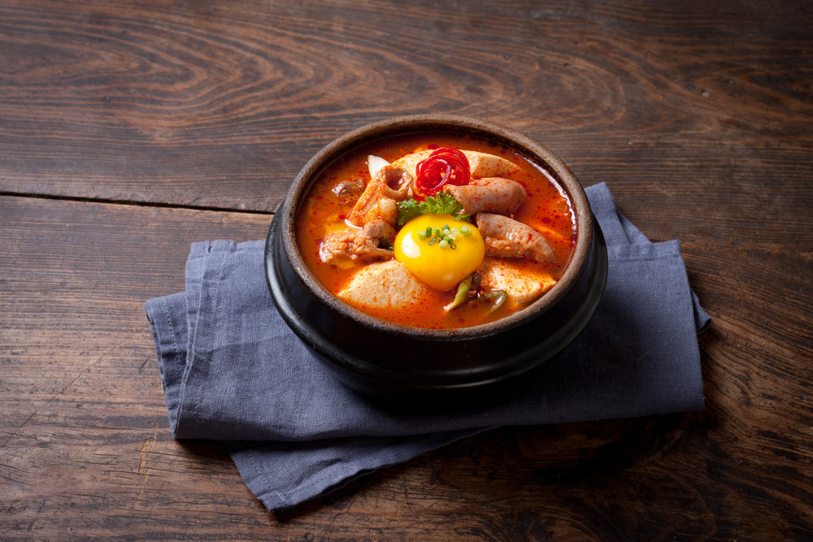

This is my Korean Stew recipe. I like Korean Stew. It is very delicious. The stew I make is also very delicious. You should try making it.
Ingredients
- 1 medium sized white onion, diced
- 1 bunch of scallions, chopped
- 1/4 cup canola oil
- 1 cup of kimchi, chopped
- 1/2lb soft tofu
- 1/2lb thin cut brisket
- 1/2lb mussels
- 1/2lb shrimp
- 8 cups of water
- 3 tbsp of red pepper powder
(Buy here)
- 3 tbsp mushroom powder
(Buy here)
- 1 tbsp sesame oil
- 2 tsp salt
- 2 tsp black pepper
|

|